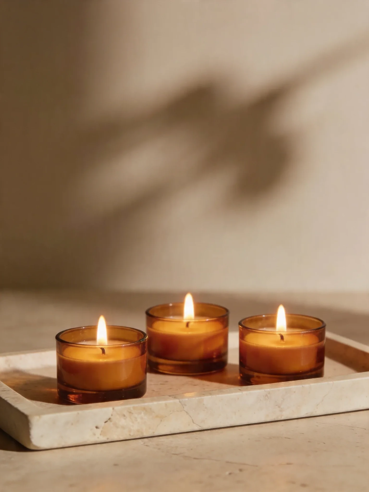
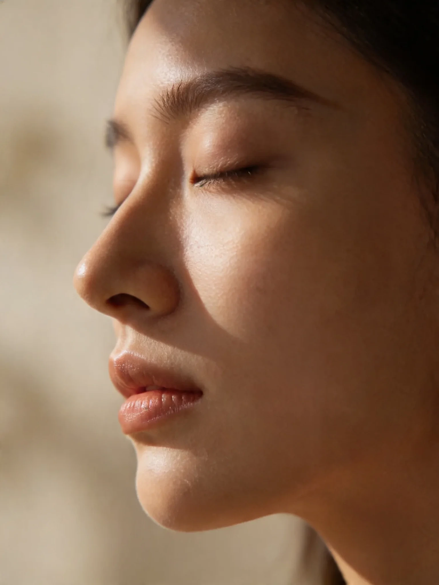

Potrzebujemy bezpiecznego miejsca na stół, dostępu do łazienki i chwili bez pośpiechu. Światło, zapach i dźwięk dopasowujemy do domu, zamiast przykrywać go scenografią.
Przywozimy
sprzęt, czyste tekstylia, podkład i uzgodniony kosmetyk
Ty wybierasz
ciszę lub muzykę, intensywność i obszary pomijane
Dom zachowuje
swój rytm, prywatność i znajome otoczenie
Najpierw wybierz, jak chcesz czuć się podczas rytuału.
Selektor nie diagnozuje i nie zastępuje konsultacji medycznej. Przy przeciwwskazaniach zapytaj lekarza przed rezerwacją.
KARTA RYTUAŁU / DEMO
Dotyk Ukojenia · 60 min
Płynny, delikatny rytm i spokojne tempo. Bez rozmowy poza krótkim ustaleniem komfortu.
Przyjazd
15 min przed rytuałem
Potrzebujesz
około 2 × 3 m wolnej przestrzeni
Przywozimy
stół, czyste tekstylia, podkład i olej
Orientacyjnie
260 zł · portfolio demo
Trzy rytuały. Każdy z inną dynamiką.
Intensywność potwierdzamy przed rozpoczęciem i można ją zmienić w trakcie.
Dotyk miękki
Dotyk Ukojenia
Płynna, delikatna praca dla osób, które chcą zwolnić i odpocząć.
60 / 90 minDotyk średni
Równowaga
Spokojne tempo i więcej uwagi dla wybranych obszarów ciała.
60 / 90 minDotyk wyraźny
Głębszy Rytm
Wyraźniejszy ucisk w granicach komfortu; nadal usługa relaksacyjna.
90 min
Intensywność ma język, nie skalę bólu.
„Mocniej” i „delikatniej” można powiedzieć w każdej chwili. Komfort nie jest testem wytrzymałości.
Delikatnapowolny, miękki rytmdobry wybór, gdy priorytetem jest wyciszenieŚredniastabilny, wyczuwalny naciskz możliwością pracy spokojniej na wybranych obszarachWyraźnagłębszy kontakt bez przekraczania komfortunie jest terapią ani leczeniem bólu

Atmosfera nie musi udawać hotelu.
Wystarczy ciepłe pomieszczenie, chwila bez powiadomień i miejsce na bezpieczne rozłożenie stołu.
Przygotuj miejsce, nie scenografię.
Zaznacz elementy, żeby sprawdzić gotowość przestrzeni. To lokalna checklista, niczego nie wysyła.
Od dzwonka do ciszy, bez niespodzianek.
Wizyta ma własny rytm i jasne granice.
−15Przyjazd
wniesienie i przygotowanie stołu
−05Ustalenie komfortu
intensywność, obszary pomijane, przeciwwskazania
00Rytuał
czas usługi liczony od rozpoczęcia
+10Złożenie przestrzeni
pakowanie sprzętu i krótka informacja po wizycie
Wszystko, co dotyka skóry, ma swoje miejsce.
Taca przyjazdu porządkuje sprzęt, tekstylia, kosmetyk i wybory atmosfery przed rozpoczęciem.
kosmetyk uzgodniony przed użyciem
Stółstabilny, rozkładany i przygotowany na miejscu
Tekstyliaświeży komplet dla jednej wizyty
Podkładjednorazowy lub przygotowany zgodnie z zakresem usługi
Kosmetykskład i zapach potwierdzone przed rytuałem
Higiena jest protokołem, nie obietnicą w stopce.
Przed wizytą
czysty komplet tekstyliów i przygotowane akcesoria
Między wizytami
stół i powierzchnie kontaktowe dezynfekowane
Na miejscu
higiena dłoni przed rozpoczęciem i po zakończeniu
Po wizycie
tekstylia zabezpieczone do osobnego transportu

Zgoda nie kończy się po rozpoczęciu.
Możesz zmienić intensywność, poprosić o pominięcie obszaru, przerwać rytuał albo zrezygnować z zapachu czy muzyki.
Przed wizytą zgłoś ciążę, infekcję, gorączkę, świeży uraz, zabieg lub stan wymagający konsultacji.
W razie wątpliwości skonsultuj możliwość skorzystania z usługi z lekarzem przed rezerwacją.
Zakres Touché oferuje relaks, nie diagnozę, fizjoterapię ani leczenie bólu.
Najpierw adres. Potem obietnica przyjazdu.
Demonstracyjna koncepcja zakłada wizyty w Warszawie. Dokładny zasięg, czas dojazdu i ewentualny koszt trzeba potwierdzić dla konkretnego adresu.
ADRESTRASAPARKOWANIE / WEJŚCIEPOTWIERDZENIE
Najczęstsze pytania przed wizytą.
Jeśli odpowiedź zależy od zdrowia, adresu lub warunków w domu, potwierdzamy ją indywidualnie.
Czy muszę mieć własny stół?
Nie. Stół i podstawowe wyposażenie przyjeżdżają z osobą wykonującą usługę.
Czy mogę wybrać kosmetyk bez zapachu?
Tak, dostępność i skład trzeba potwierdzić przed wizytą, szczególnie przy alergiach i wrażliwej skórze.
Czy usługa pomoże na ból?
Touché nie diagnozuje ani nie leczy. Przy bólu, urazie lub niepokojących objawach właściwa jest konsultacja medyczna.
Czy zwierzę może zostać w pokoju?
Dla bezpieczeństwa sprzętu i spokoju rytuału najlepiej przygotować zwierzęciu wygodne miejsce w innym pomieszczeniu.
Przed terminem potwierdzamy cztery rzeczy.
wybrany rytuał i czas;
adres, wejście i możliwość zaparkowania;
przeciwwskazania oraz kosmetyk;
warunki przygotowania przestrzeni.
Dopiero pełne potwierdzenie oznacza uzgodnioną wizytę.
Przygotuj wizytę, zanim wybierzesz termin.
Formularz lokalny. Nie wysyła danych i nie rezerwuje terminu.